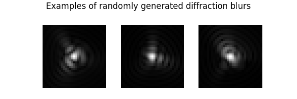
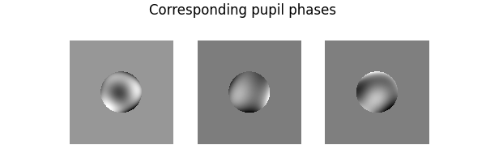
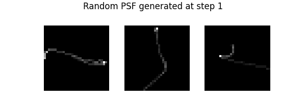
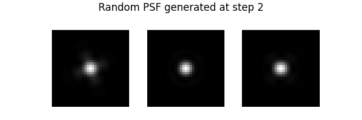
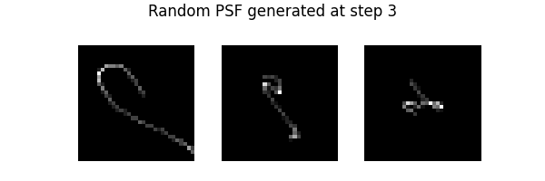
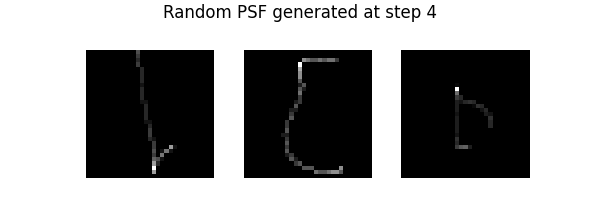

Note
Go to the end to download the full example code.
A tour of blur operators
This example provides a tour of 2D blur operators in DeepInv. In particular, we show how to use DiffractionBlurs (Fresnel diffraction), motion blurs and space varying blurs.
import torch
import deepinv as dinv
from deepinv.utils.plotting import plot
from deepinv.utils.demo import load_url_image, get_image_url
First, let’s load some test images.
dtype = torch.float32
device = "cpu"
img_size = (173, 125)
url = get_image_url("CBSD_0010.png")
x_rgb = load_url_image(
url, grayscale=False, device=device, dtype=dtype, img_size=img_size
)
url = get_image_url("barbara.jpeg")
x_gray = load_url_image(
url, grayscale=True, device=device, dtype=dtype, img_size=img_size
)
# Next, set the global random seed from pytorch to ensure reproducibility of the example.
torch.manual_seed(0)
torch.cuda.manual_seed(0)
We are now ready to explore the different blur operators.
Convolution Basics
The class deepinv.physics.Blur implements convolution operations with kernels.
For instance, here is the convolution of a grayscale image with a grayscale filter:
When a single channel filter is used, all channels are convolved with the same filter:
By default, the boundary conditions are 'valid', but other options among ('circular', 'reflect', 'replicate') are possible:
For circular boundary conditions, an FFT implementation is also available. It is slower that deepinv.physics.Blur(),
but inherits from deepinv.physics.DecomposablePhysics(), so that the pseudo-inverse and regularized inverse are computed faster and more accurately.
One can also change the blur filter in the forward pass as follows:
When applied to a new image, the last filter is used:
We can also define color filters. In that situation, each channel is convolved with the corresponding channel of the filter:
psf_size = 9
filter_rgb = torch.zeros((1, 3, psf_size, psf_size), device=device, dtype=dtype)
filter_rgb[:, 0, :, psf_size // 2 : psf_size // 2 + 1] = 1.0 / psf_size
filter_rgb[:, 1, psf_size // 2 : psf_size // 2 + 1, :] = 1.0 / psf_size
filter_rgb[:, 2, ...] = (
torch.diag(torch.ones(psf_size, device=device, dtype=dtype)) / psf_size
)
y = physics(x_rgb, filter=filter_rgb)
plot(
[x_rgb, filter_rgb, y],
titles=["signal", "Colour filter", "measurement"],
suptitle="Color image + color filter convolution",
)
Blur generators
More advanced kernel generation methods are provided with the toolbox thanks to
the deepinv.physics.generator.PSFGenerator. In particular, motion blurs generators are implemented.
Motion blur generators
from deepinv.physics.generator import MotionBlurGenerator
In order to generate motion blur kernels, we just need to instantiate a generator with specific the psf size.
In turn, motion blurs can be generated on the fly by calling the step() method. Let’s illustrate this now and
generate 3 motion blurs. First, we instantiate the generator:
To generate new filters, we call the step() function:
filters = motion_generator.step(batch_size=3)
# the `step()` function returns a dictionary:
print(filters.keys())
plot(
[f for f in filters["filter"]],
suptitle="Examples of randomly generated motion blurs",
)
dict_keys(['filter'])
Other options, such as the regularity and length of the blur trajectory can also be specified:
motion_generator = MotionBlurGenerator(
(psf_size, psf_size), l=0.6, sigma=1, device=device, dtype=dtype
)
filters = motion_generator.step(batch_size=3)
plot([f for f in filters["filter"]], suptitle="Different length and regularity")
Diffraction blur generators
We also implemented diffraction blurs obtained through Fresnel theory and definition of the psf through the pupil plane expanded in Zernike polynomials
from deepinv.physics.generator import DiffractionBlurGenerator
diffraction_generator = DiffractionBlurGenerator(
(psf_size, psf_size), device=device, dtype=dtype
)
Then, to generate new filters, it suffices to call the step() function as follows:
filters = diffraction_generator.step(batch_size=3)
In this case, the step() function returns a dictionary containing the filters, their pupil function and Zernike coefficients:
print(filters.keys())
# Note that we use **0.2 to increase the image dynamics
plot(
[f for f in filters["filter"] ** 0.5],
suptitle="Examples of randomly generated diffraction blurs",
)
plot(
[
f
for f in torch.angle(filters["pupil"][:, None])
* torch.abs(filters["pupil"][:, None])
],
suptitle="Corresponding pupil phases",
)
print("Coefficients of the decomposition on Zernike polynomials")
print(filters["coeff"])
- 
- 
dict_keys(['filter', 'coeff', 'pupil'])
Coefficients of the decomposition on Zernike polynomials
tensor([[-0.0349, 0.0559, -0.0247, -0.0145, 0.0431, -0.0064, -0.0642, 0.0707],
[ 0.0322, -0.0109, -0.0623, -0.0014, -0.0501, -0.0519, -0.0204, 0.0022],
[ 0.0318, 0.0568, 0.0515, 0.0732, 0.0089, -0.0096, -0.0559, -0.0335]])
We can change the cutoff frequency (below 1/4 to respect Shannon’s sampling theorem)
diffraction_generator = DiffractionBlurGenerator(
(psf_size, psf_size), fc=1 / 8, device=device, dtype=dtype
)
filters = diffraction_generator.step(batch_size=3)
plot(
[f for f in filters["filter"] ** 0.5],
suptitle="A different cutoff frequency",
)
It is also possible to directly specify the Zernike decomposition. For instance, if the pupil is null, the PSF is the Airy pattern
n_zernike = len(
diffraction_generator.list_param
) # number of Zernike coefficients in the decomposition
filters = diffraction_generator.step(coeff=torch.zeros(3, n_zernike))
plot(
[f for f in filters["filter"][:, None] ** 0.3],
suptitle="Airy pattern",
)
Finally, notice that you can activate the aberrations you want in the ANSI nomenclature https://en.wikipedia.org/wiki/Zernike_polynomials#OSA/ANSI_standard_indices
diffraction_generator = DiffractionBlurGenerator(
(psf_size, psf_size), fc=1 / 8, list_param=["Z5", "Z6"], device=device, dtype=dtype
)
filters = diffraction_generator.step(batch_size=3)
plot(
[f for f in filters["filter"] ** 0.5],
suptitle="PSF obtained with astigmatism only",
)
Generator Mixture
During training, it’s more robust to train on multiple family of operators. This can be done
seamlessly with the deepinv.physics.generator.GeneratorMixture.
from deepinv.physics.generator import GeneratorMixture
torch.cuda.manual_seed(4)
torch.manual_seed(6)
generator = GeneratorMixture(
([motion_generator, diffraction_generator]), probs=[0.5, 0.5]
)
for i in range(4):
filters = generator.step(batch_size=3)
plot(
[f for f in filters["filter"]],
suptitle=f"Random PSF generated at step {i + 1}",
)
- 
- 
- 
- 
Space varying blurs
Space varying blurs are also available using deepinv.physics.SpaceVaryingBlur
from deepinv.physics.generator import (
DiffractionBlurGenerator,
ProductConvolutionBlurGenerator,
)
from deepinv.physics.blur import SpaceVaryingBlur
psf_size = 32
img_size = (256, 256)
n_eigenpsf = 10
spacing = (64, 64)
padding = "valid"
batch_size = 1
delta = 16
# We first instantiate a psf generator
psf_generator = DiffractionBlurGenerator(
(psf_size, psf_size), device=device, dtype=dtype
)
# Now, scattered random psfs are synthesized and interpolated spatially
pc_generator = ProductConvolutionBlurGenerator(
psf_generator=psf_generator,
img_size=img_size,
n_eigen_psf=n_eigenpsf,
spacing=spacing,
padding=padding,
)
params_pc = pc_generator.step(batch_size)
physics = SpaceVaryingBlur(method="product_convolution2d", **params_pc)
dirac_comb = torch.zeros(img_size)[None, None]
dirac_comb[0, 0, ::delta, ::delta] = 1
psf_grid = physics(dirac_comb)
plot(psf_grid, titles="Space varying impulse responses")
Total running time of the script: (0 minutes 1.382 seconds)